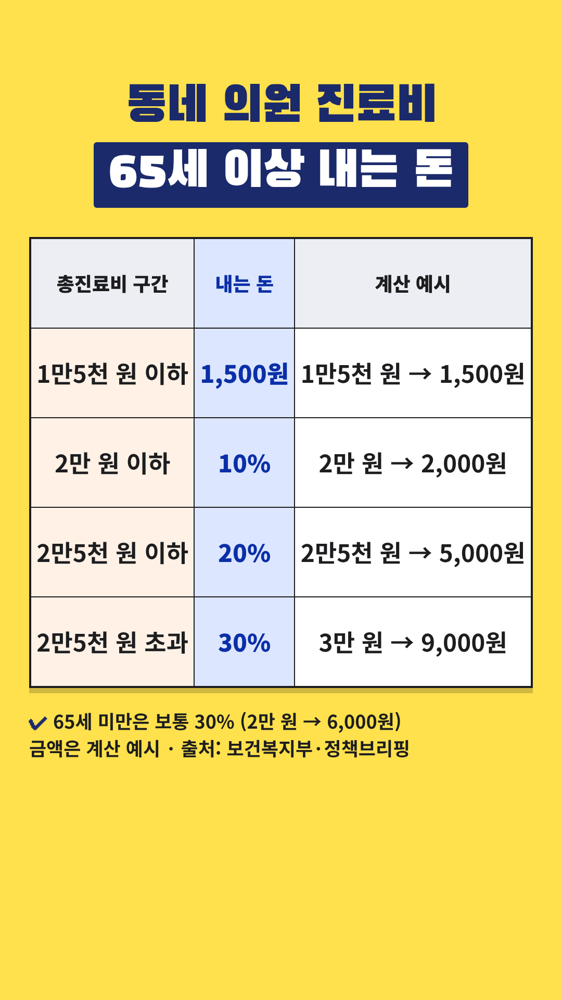

Vrew 작업 카드
2026-10-31-65세-의원진료비 · 사실 검증과 업로드 전 점검을 통과한 회차입니다. 위에서부터 차례로 복사해 붙여넣으세요.
- 대본 붙여넣기 → AI 목소리(차분한 중년, 0.9~1.0배)
- 장면마다 AI 이미지 문구 복사 → 이미지 바꾸기
- 큰 글자가 있는 장면에 텍스트 추가
- 배경음악(오디오 보관함·Vrew 음원) → 내보내기 mp4
- 제목·설명란·고정댓글 복사해 업로드
0단계 · 첫 장면 강조 제목
Vrew 1번 장면 → 삽입 → 이미지 → 같은 폴더의 title-overlay.png(투명 배경) → 화면 전체 크기로 맨 위에 얹기. 1번 장면의 '큰 글자'는 이 이미지가 대신하므로 따로 넣지 않습니다. 아래 배경은 AI 이미지 자리 표시입니다.
0-1단계 · 숫자 카드 (표 이미지)

표시된 장면들을 하나로 이어 붙이거나 장면마다 → 이미지 바꾸기 → 같은 폴더의 number-N.png를 화면 전체 크기로 넣습니다. 이 장면들에는 AI 이미지와 큰 글자를 넣지 않습니다. 자막은 화면 맨 아래에 두어 표를 가리지 않게 합니다.
1단계 · 대본
1. 대본 붙여넣기
Vrew → 새로 만들기 → 텍스트로 비디오 만들기 → 쇼츠 9:16 → 대본 칸에 붙여넣기
65세부터 의원비 1,500원일 때 있어요. 총진료비 구간에 따라 내는 돈이 정해져요. 총진료비가 1만 5천 원 이하면 1,500원만 내요. 1만 5천 원을 넘으면 구간별로 달라요. 2만 원까지는 10%, 2만 5천 원까지는 20%, 그보다 많으면 30%예요. 표를 보시면, 2만 원 진료는 2,000원. 65세 미만은 보통 30%, 6,000원이죠. 2만 5천 원을 넘으면 똑같이 30%예요. 동네 의원 외래 진료 기준이고, 병원급과 약국은 기준이 달라요. 진료비 영수증으로 한번 확인해 보세요. 개인 상황에 따라 다르니 전문가와 상담하세요.
2~3단계 · 장면별 이미지와 큰 글자
장면 1
나레이션65세부터 의원비 1,500원일 때 있어요.
AI 이미지밝은 동네 의원 대기실 의자에 앉아 미소 짓는 60대 한국인 부부, 간판·글자 없음, 위쪽은 흐린 흰 벽, 따뜻한 자연광, 사실적인 사진 스타일, 세로 9:16 구도, 화면에 글자 없음
큰 글자동네 의원 진료비
1,500원 내는 구간
장면 2
나레이션총진료비 구간에 따라 내는 돈이 정해져요.
AI 이미지탁자 위 계산기와 종이 한 장, 글자는 흐릿하게, 따뜻한 자연광, 사실적인 사진 스타일, 세로 9:16 구도, 화면에 글자 없음
큰 글자총진료비 구간별
장면 3
나레이션총진료비가 1만 5천 원 이하면
AI 이미지진료실 앞 대기 의자에 앉아 차례를 기다리는 60대 한국인 남성, 간판 없음, 따뜻한 자연광, 사실적인 사진 스타일, 세로 9:16 구도, 화면에 글자 없음
큰 글자1만 5천 원 이하
장면 4
나레이션1,500원만 내요.
AI 이미지의원 접수대에서 카드로 계산하는 60대 한국인 여성의 손, 화면 글자 없음, 따뜻한 자연광, 사실적인 사진 스타일, 세로 9:16 구도, 화면에 글자 없음
큰 글자1,500원
장면 5
나레이션1만 5천 원을 넘으면 구간별로 달라요.
숫자 카드number-1.png를 화면 전체로 (AI 이미지·큰 글자 대신)
장면 6
나레이션2만 원까지는 10%,
숫자 카드number-1.png를 화면 전체로 (AI 이미지·큰 글자 대신)
장면 7
나레이션2만 5천 원까지는 20%,
숫자 카드number-1.png를 화면 전체로 (AI 이미지·큰 글자 대신)
장면 8
나레이션그보다 많으면 30%예요.
숫자 카드number-1.png를 화면 전체로 (AI 이미지·큰 글자 대신)
장면 9
나레이션표를 보시면, 2만 원 진료는 2,000원.
숫자 카드number-1.png를 화면 전체로 (AI 이미지·큰 글자 대신)
장면 10
나레이션65세 미만은 보통 30%, 6,000원이죠.
숫자 카드number-1.png를 화면 전체로 (AI 이미지·큰 글자 대신)
장면 11
나레이션2만 5천 원을 넘으면 똑같이 30%예요.
숫자 카드number-1.png를 화면 전체로 (AI 이미지·큰 글자 대신)
장면 12
나레이션동네 의원 외래 진료 기준이고,
AI 이미지주택가 골목의 작은 2층 건물 입구로 걸어가는 60대 한국인 여성, 간판·글자 없음, 따뜻한 자연광, 사실적인 사진 스타일, 세로 9:16 구도, 화면에 글자 없음
큰 글자동네 의원 외래
장면 13
나레이션병원급과 약국은 기준이 달라요.
AI 이미지넓은 종합병원 로비와 약 진열장이 있는 약국 카운터를 나란히 보여 주는 장면, 로고·글자 없음, 따뜻한 자연광, 사실적인 사진 스타일, 세로 9:16 구도, 화면에 글자 없음
큰 글자병원급·약국은 달라요
장면 14
나레이션진료비 영수증으로 한번 확인해 보세요.
AI 이미지거실 탁자에서 종이 영수증을 함께 들여다보는 60대 한국인 부부, 글자는 흐릿하게, 따뜻한 자연광, 사실적인 사진 스타일, 세로 9:16 구도, 화면에 글자 없음
장면 15
나레이션개인 상황에 따라 다르니 전문가와 상담하세요.
AI 이미지상담 창구에서 상담원과 이야기하는 60대 한국인 부부, 따뜻한 자연광, 사실적인 사진 스타일, 세로 9:16 구도, 화면에 글자 없음
5단계 · 업로드 정보
제목
65세 이상 동네 의원비, 1만 5천 원 이하면 1,500원
설명란
[음원] 칸은 고른 배경음악으로 채운 뒤 올리세요.
65세 이상이 동네 의원(의원급)에서 외래 진료를 받으면, 총진료비 구간에 따라 내는 돈이 정해져요. 총진료비 1만 5천 원 이하면 1,500원, 2만 원 이하면 10%, 2만 5천 원 이하면 20%, 그보다 많으면 30%를 내요. 예를 들어 총진료비 2만 원이면 65세 이상은 2,000원이고, 65세 미만은 보통 30%라 6,000원이에요. (계산 예시) [용어 풀이] - 총진료비: 건강보험이 적용되는 진료비 전체(요양급여비용 총액)예요. 내가 내는 돈과 건강보험이 내는 돈을 합친 금액이고, 비급여 항목은 따로 붙어요. - 영상 속 금액(2,000원 등)은 공식 구간 규칙으로 계산한 예시예요. 실제 영수증은 진료 내용에 따라 달라요. [이런 경우는 기준이 달라요] - 병원·종합병원·상급종합병원 외래와 약국은 기준이 따로 있어요. (약국은 65세 이상 1만 원 이하 1,000원 등 별도 구간) - 한의원에서 투약처방을 받으면 구간이 조금 달라요. (1만 5천 원 이하 1,500원, 2만 5천 원 이하 10%, 3만 원 이하 20%, 넘으면 30%) - 건강보험 기준이에요. 의료급여 수급자는 본인부담 체계가 따로 있어요. [출처] - 보건복지부 보험급여체계(외래 본인부담) 안내: https://www.mohw.go.kr/menu.es?mid=a10705020200 - 보건복지부 보도자료 '노인외래정액제 개선안' (2017-11-01, 정책브리핑): https://www.korea.kr/briefing/pressReleaseView.do?newsId=156234597 - 정책브리핑 국민이 말하는 정책 (2018-12-20): https://www.korea.kr/news/reporterView.do?newsId=148856595 [꼭 직접 확인해 주세요] 이 영상은 보건복지부 안내와 정책브리핑 보도자료를 바탕으로 만들었고, 법령(국민건강보험법 시행령·시행규칙) 원문을 직접 대조하지는 못했어요. 기준 금액은 제도 개정으로 바뀔 수 있으니 위 보건복지부 안내나 국민건강보험공단(1577-1000)에서 확인해 주세요. [음원] [Vrew 작업 후 vrew.md 음원 기록란에서 채우기] [안내] 이 영상은 공공기관 자료를 바탕으로 한 일반 정보이며, 특정 병원을 추천하지 않고 의료·법률 상담을 대신하지 않습니다. 실제 본인부담은 진료 내용과 개인 상황에 따라 다르니 국민건강보험공단에서 확인하시고 전문가와 상담하세요. 안내 내용은 2026년 10월 31일 열람 기준이에요. #쇼츠 #노인외래정액제 #의원진료비 #65세이상 #5060
고정댓글
동네 의원에서 진료비 영수증을 받아 보시면 총진료비와 내신 돈이 어떻게 나와 있던가요? 부모님 진료비를 챙기시는 분들의 경험도 댓글로 나눠 주세요.
업로드 추천 시간: 오전 7시